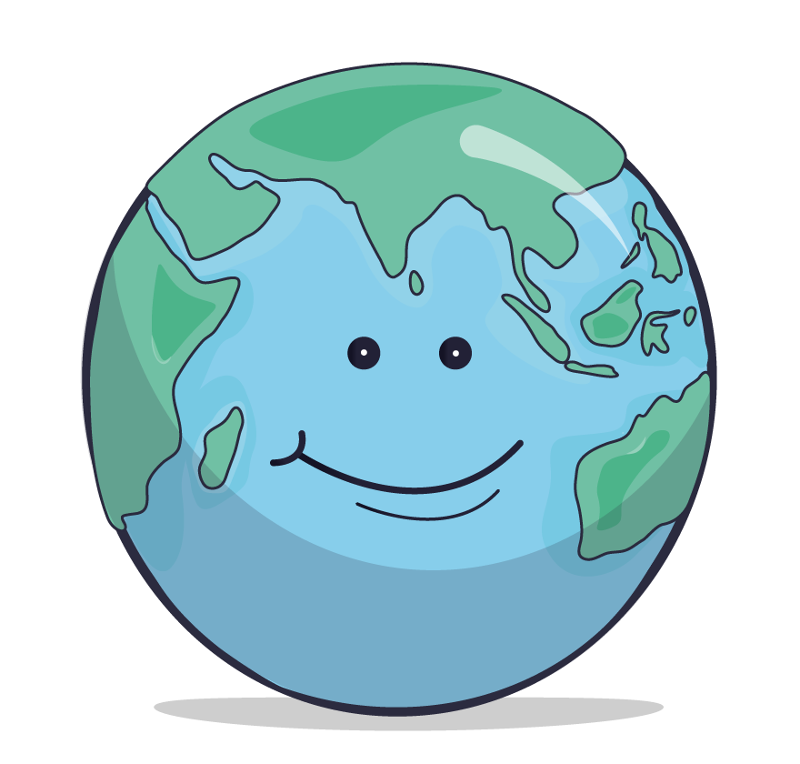

Bonus: Kontinente und Ozeane
 |
Kontinente sind große Landmassen, die die Erde bedecken. Es gibt sechs Kontinente: Afrika, Asien, Europa, den Doppelkontinent Amerika, die Antarktis und Australien/Ozeanien.
Die Kontinente sind durch die Ozeane, auch Weltmeere genannt, voneinander getrennt. Diese riesigen Wasserflächen bedecken den Großteil unserer Erde: Sie nehmen etwa 71 % der Erdoberfläche ein und sind deshalb bedeutsam für das Klima und das Leben auf der Erde.
|
Klicke auf das Plus, um die Kontinente und Ozeane zu entdecken.
 Vergrößere die Ansicht, bevor du startest!
Vergrößere die Ansicht, bevor du startest!  Drücke ESC-Taste zum Verkleinern.
Drücke ESC-Taste zum Verkleinern.
Jetzt bist du dran!